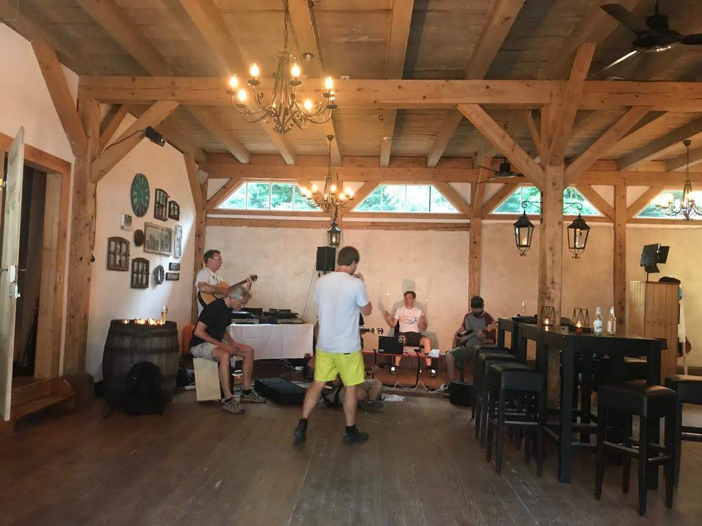
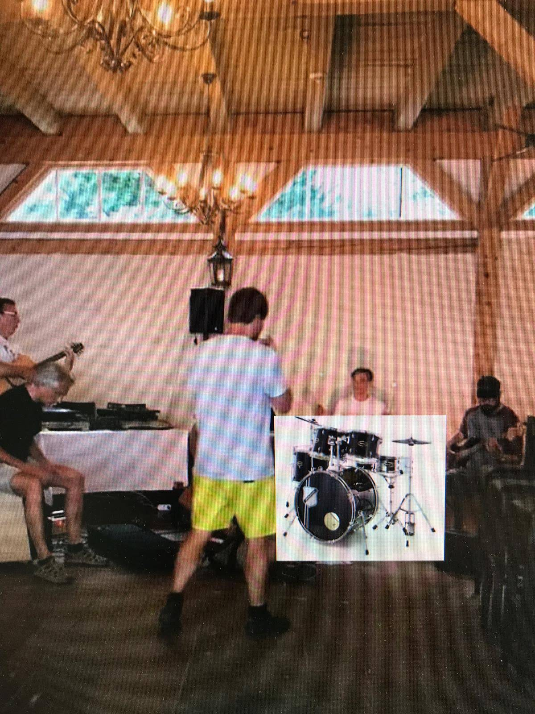
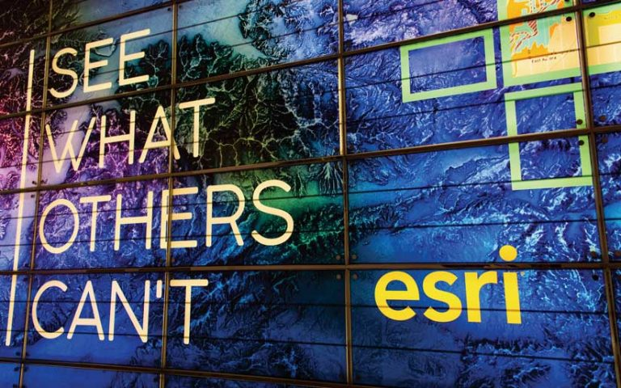
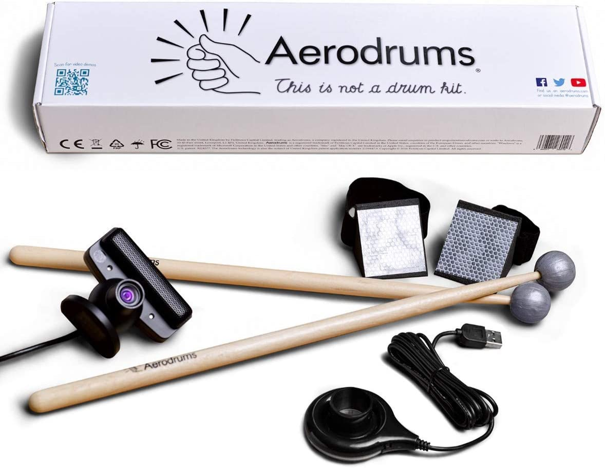
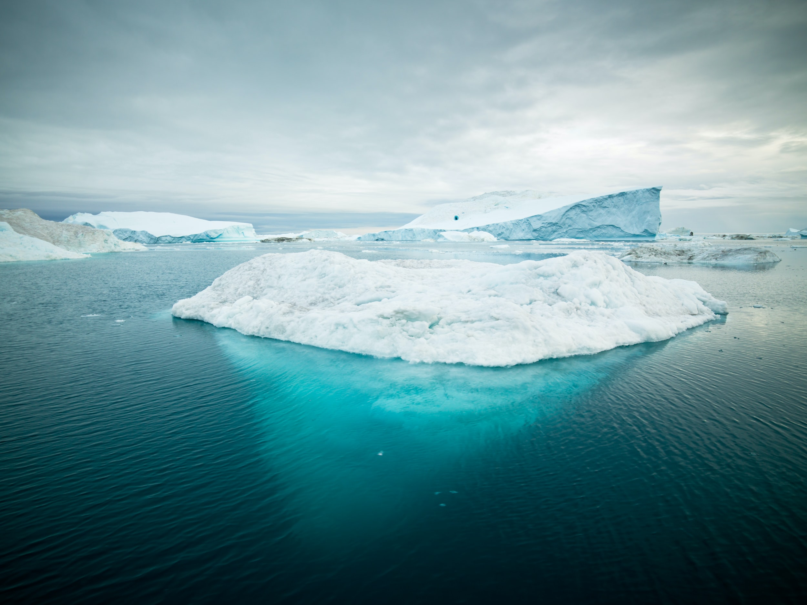
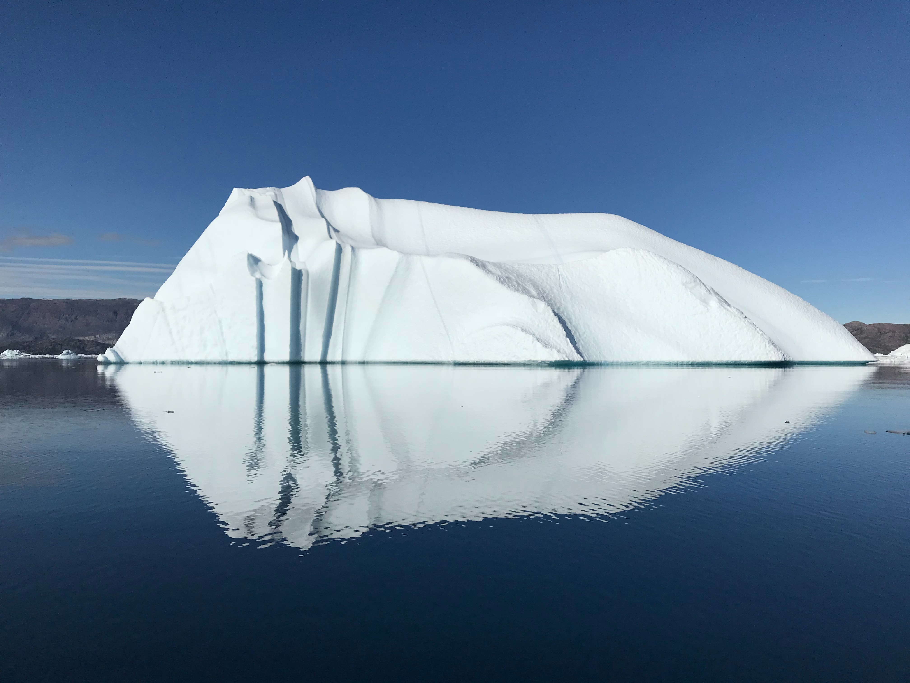

Welcome!
Nik

snippet.upper.laser mit @koehnik auf der #esrikon stage! Paukenschlag an Tag 1 der Esri Konferenz 2020! #Maps & #Music we love pic.twitter.com/08HHMIRzJ2
— Esri Deutschland (@Esri_de) March 3, 2020
Adventures in Mapping
Live Performance @ EsriKon 2020
Summer event

Summer event
Summer event

Summer event
Summer event
Summer event

Aerodrums
Snippet Upper Laser
Snippet Upper Laser
Coole performance ! 😀 Luftschlagzeug statt Luftgitarre auf der #EsriKon 🤩🥳 pic.twitter.com/RZARrZ2Av0
— Elisabeth Steindl (@e_steindl) March 3, 2020
Objective
All images generated from Esri SoftwareGISberg

Photo by Alexander Hafemann on Unsplash
Photo by Alexander Hafemann on Unsplash
Visualization
Data
Science
Tech
GISberg

Photo by Elmar Stoessel on Unsplash
Photo by Elmar Stoessel on Unsplash
Visualization
Data
Science
Tech